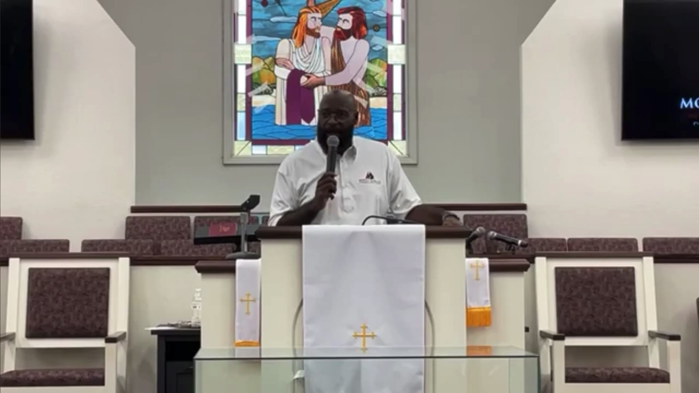

Mount Moriah Missionary Baptist Church
This Week
Every Sunday is recorded and posted here. The newest service always plays first, so you can catch the message you missed or hear a word again during the week.
Use the player controls to move through the full service list.
Watch Live on SundayMessage Archive
Select any service below to watch it right here on this page.
Join us Sunday: Sunday School at 10:00 AM, Morning Worship at 11:00 AM.